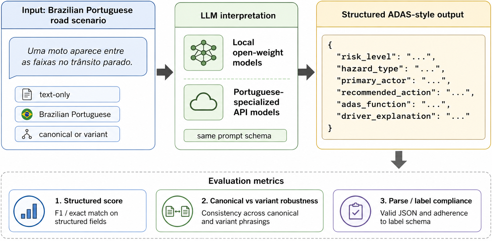

Paired by design
Every scenario appears in canonical and Brazilian-variant form with identical reference labels.
Structured L2+/ADAS scenario interpretation under Brazilian Portuguese variation.
A text-only paired benchmark for testing whether language models can turn everyday Brazilian road descriptions into reliable, machine-readable safety labels.
Brazilian RoadBench isolates a practical interface layer: understanding short text descriptions—not visual perception, vehicle control, or autonomous-driving certification.

Every scenario appears in canonical and Brazilian-variant form with identical reference labels.
Variants introduce informal, regional, cultural, and lightly noisy PT-BR without changing the hazard.
Models must return valid context, actor, hazard, risk, ADAS-function, and action labels.
Canonical scenarios were reviewed for realism, label quality, one primary hazard, and label leakage before paired variants were produced and schema-validated.

Sabiá-4 leads overall. Qwen3-4B q4 is the strongest local open-weight baseline, while action selection, ADAS-function prediction, risk calibration, and schema compliance remain bottlenecks.
| System | Access | Parse | Score | Retention |
|---|---|---|---|---|
| 1 · Sabiá-4 | API | 1.000 | 0.672 | 0.970 |
| 2 · Sabiazinho-4 | API | 0.935 | 0.584 | 0.994 |
| 3 · Qwen3-4B q4 | Local | 0.970 | 0.481 | 1.032 |
| 4 · Llama 3.2 3B q4 | Local | 0.830 | 0.426 | 0.973 |
| 5 · Amadeus-Verbo 7B q4 | Local | 0.830 | 0.393 | 0.912 |
| 6 · Amadeus-Verbo 3B q4 | Local | 0.785 | 0.339 | 0.955 |
| 7 · Gemma 3 4B IT q4 | Local | 0.685 | 0.324 | 0.994 |
All files are UTF-8 JSONL. The paired file is the recommended entry point and contains both prompt forms with shared gold labels.
Canonical scenarios, Brazilian variants, paired evaluation data, dataset card, documentation, and license.
This synthetic, text-only benchmark is not a perception benchmark, a vehicle-control benchmark, or a safety-validation suite for deployed ADAS systems.
Accepted at Latin.Science 2026. The proceedings version has not yet been published.
Large language models can support driver-facing explanations, fleet reports, and road-event triage, but their reliability under Brazilian Portuguese variation remains unclear. We introduce Brazilian RoadBench, a text-only benchmark for structured L2+/ADAS scenario interpretation. The benchmark contains 100 reviewed canonical Brazilian road scenarios and 100 paired Brazilian Portuguese variants, each mapped to reference labels for road context, actors, hazard type, risk level, ADAS function, recommended action, and a short explanation.
We evaluate Portuguese-specialized API models, compact local open-weight models, and Portuguese/Brazilian open-weight models. Sabiá-4 achieves the best overall structured score, followed by Sabiazinho-4, while Qwen3-4B q4 is the strongest local open-weight baseline. Results show that Brazilian variants do not generally collapse aggregate performance, but structured-output compliance, risk calibration, and action/ADAS-function selection remain key bottlenecks. Brazilian RoadBench provides a focused benchmark for studying the trade-off between Portuguese-specialized API performance and reproducible local open-model deployment.
The archival citation will be added after proceedings publication. Until then, cite the dataset repository and note the accepted Latin.Science 2026 paper.